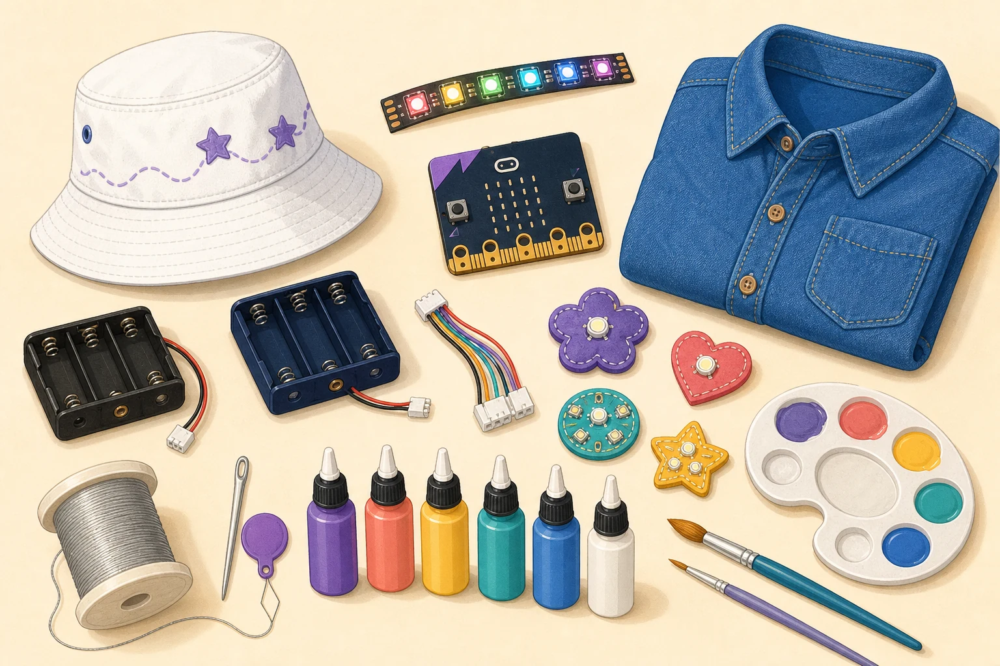

LED Denim Shirt
Turn your future vision into wearable artwork using fabric paint and approximately 4–8 Leyal LilyPad LEDs.
Wearable Technology · Individual Project
You will design and create two projects that belong to you: a painted denim shirt with sewn LEDs and a programmable NeoPixel bucket hat.

Need visual inspiration?
See how one future idea can connect the artwork and lights on both required projects.
Learn polarity and make a prepared simple circuit light safely.
Open the tutorial →See how thread carries electricity and why the two circuit paths must stay separate.
Open the tutorial →Use MakeCode on a classroom Windows laptop to program the controller for your hat.
Open the tutorial →Run a prepared 10–15-pixel system and learn data direction, separate power, shared ground, brightness, and effects.
Open the tutorial →You are working individually. Every wearable student creates both projects and submits her own proposal.